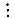

26.3 TAUSWORTHE GENERATORS
The interest in random-number generators has grown recently due to their use in cryptographic applications. In such applications, random numbers of long lengths are required. For example, a 64-byte (512-bit) long random key may be required to encode a message. Such large numbers are produced using a random sequence of binary digits (0 or 1) and then dividing the sequence into strings of desired length. Such generators were first proposed by Tausworthe (1965) and are named after him.
In general, a Tausworthe generator has the following form:
|
| bn = cq-1bn-1 ⊕ cq-2bn-2 ⊕ cq-3bn-3 ⊕ ... ⊕ c0bn-q
| (26.8)
|
where ci and bi are binary variables with values of 0 or 1 and ⊕ is the exclusive-or (mod 2 addition) operation. The generator uses the last q bits of the sequence. Therefore, it is called an autoregressive sequence of order q, or AR(q). An AR(q) generator can have a maximum period of 2q - 1.
If we use D to denote a delay operator such that Db(n) = b(n + 1), Equation (26.8) can be written as
Dqb(i - q) = cq-1Dq-1b(i - q) + cq-2Dq-2b(i - q) + ... + c0b(i - q)mod 2
or
Dq - cq-1Dq - 1 - cq-2Dq-2 - ... - c0 = 0 mod 2
Since in mod 2 arithmetic subtraction is equivalent to addition, the preceding equation is equivalent to
Dq + cq-1Dq - 1 + cq-2Dq-2 + ... + c0 = 0 mod 2
The polynomial on the left-hand side of this equation is called a characteristic polynomial and is traditionally written using x in place of D:
|
| xq + cq-1xq-1 + cq-2xq-2 + ... + c0
| (26.9)
|
The period of a Tausworthe generator depends upon the characteristic polynomial. In particular, the period is the smallest positive integer n for which xn - 1 is divisible by the characteristic polynomial. The maximum possible period with a polynomial of order q is 2q - 1. The polynomials that give this period are called primitive polynomials.
The following example illustrates the generation of random bits using a primitive polynomial.
- Example 26.4 Consider the following polynomial:
x7 + x3 + 1
- Using the D operator in place of x, we get the following formula for generating the bit sequence:
D7b(n) + D3b(n) + b(n)=0 mod 2
- or
bn+7 + bn+3 + bn = 0 mod 2, n = 0,1,2...
- or using the exclusive-or operator in place of addition mod 2, we get
bn+7 ⊕ bn+4 ⊕ bn = 0 n = 0,1,2...
- or
bn+7 = bn+4 ⊕ bn, n = 0,1,2...
- Substituting n -7 for n,
bn = bn-4 ⊕ bn-7, n = 7,8,9
- Starting with b0 = b1 = ... = b6 = 1, we get the following bit sequence:
b7 = b3 ⊕ b0 = 1 ⊕ 1 = 0
b8 = b4 ⊕ b1 = 1 ⊕ 1 = 0
b9 = b5 ⊕ b2 = 1 ⊕ 1 = 0
b10 = b6 ⊕ b3 = 1 ⊕ 1 = 0
b11 = b7 ⊕ b4 = 0 ⊕ 1 = 1


FIGURE 26.4 Linear-feedback shift-register implementation of a random-number generator using the polynomial x5 + x3 + 1.
- The complete sequence is 1111111 0000111 0111100 1011001 0010000 0010001 0011000 1011101 0110110 0000110 0110101 0011100 1111011 0100001 0101011 1110100 1010001 1011100 0111111 1000011 1000000.
- The first seven bits form the seed. Notice that the sequence starts repeating only after 127 bits; therefore, it has a period of 127, or 27 - 1, bits. The polynomial x7 + x3 + 1 is therefore a primitive polynomial.
A Tausworthe sequence can be easily generated in hardware using Linear-Feedback Shift Registers (LFSRs). For example, the polynomial x5 + x3 + 1 results in the generator bn = bn-2 ⊕ bn-5. This can be implemented using the LFSR shown in Figure 26.4. The circuit consists of six registers, each holding one bit. On every clock cycle, each register’s content is shifted out, and the new content is determined by the input to the register. Figure 26.5 shows the circuit for the general Tausworthe sequence given by Equation (26.8) In practice, the AND gates shown are not required if values of the coefficients ci are known. The feedback path consisting of the AND gates and the corresponding EXCLUSIVE-OR gates are omitted for those ci’ that are zero. For the remaining ci’s (which are 1), the AND gates are omitted and the outputs of the stages are connected directly to the respective EXCLUSIVE-OR gates.
From an AR(q)-bit sequence, we can get random integers of any desired length. Tausworthe proposed to construct l-bit random numbers xn using the bit sequence bn by dividing the sequence into successive groups of s bits and using the first l bits of each group as a binary fraction; that is,
xn = 0.bsnbsn+1bsn+2bsn+3...bsn+l-1
or equivalently,
|
|  | (26.10)
|
FIGURE 26.5 Feedback shigt register implementation of a random-number generator using a general q-degree polynomial.
)
){kind=link}
){kind=link}
){kind=link}